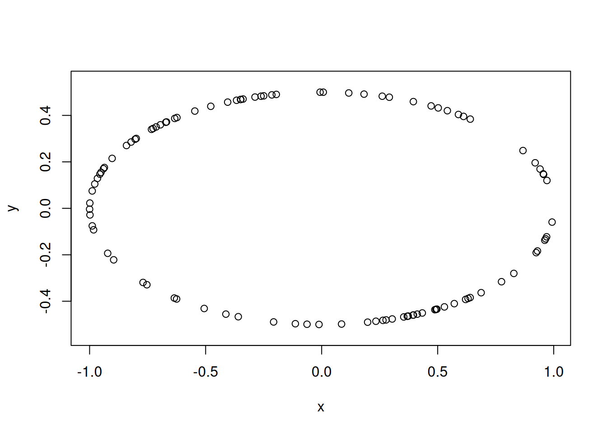

point_data <- tdaunif::sample_ellipse(n = 100L, ar = 2)Topological data analysis in R
Topological data analysis (TDA) is a rapidly growing field that uses techniques from algebraic topology to analyze the shape and structure of data. At its core, TDA provides tools to understand the geometric and topological features of datasets across multiple scales, with persistent homology (PH) being one of its fundamental techniques.
Several R packages have emerged to provide TDA capabilities to the R community, including:
- {TDA} which focuses on statistical analysis of PH and density clustering by providing an R interface for the efficient algorithms of the C++ libraries GUDHI, Dionysus and PHAT. This package also implements methods from Fasy et al. (2014) and Chazal et al. (2014) for analyzing the statistical significance of PH features.
- {TDAstats} which provides a comprehensive toolset for conducting TDA, specifically via the calculation of PH in a Vietoris-Rips complex (Wadhwa et al. 2018).
- {ripserr} which provides an R interface to the Ripser and Cubical Ripser C++ libraries (Bauer 2021; Kaji, Sudo, and Ahara 2020).
- {TDAkit} which provides a variety of algorithms to learn with PH of the data based on functional summaries for clustering, hypothesis testing, and visualization (Wasserman 2018).
- Other packages that have been archived due to lack of maintenance (e.g. {kernelTDA}).
While these packages have made TDA more accessible, they’ve also introduced different data structures for representing persistence data, creating challenges for interoperability and workflow consistency. Moreover, workflows using tools from different packages will rely on some of the same low-level operations, like computing PH and calculating distances between persistence diagrams. When each package is built for purpose, this will lead to either duplication or cascading dependencies.
The {phutil} package addresses such fragmentation by providing a unified toolbox for handling persistence data. It offers consistent data structures and methods that work seamlessly with outputs from various TDA packages. As part of the TDAverse initiative, {phutil} contributes to creating a coherent ecosystem for topological data analysis in R.
Minimal mathematical background
Persistent homology
The {phutil} documentation provides an overview of persistent homology. For now, know that the result of this procedure is a persistence diagram: a multiset (set with multiplicity) of points in the plane—usually the upper-half plane and most often the first quadrant. Persistence diagrams encode topological features of different dimensions, and a single diagram may encode features of one or all dimensions. By persistence data, we mean a data structure that encodes diagrams of all dimensions, and possibly many diagrams coming from data sets of a common type.
Distances between persistence diagrams
Two persistence diagrams \(X\) and \(Y\) are canonically compared using Wasserstein distances. These are a family of metrics determined by a \(q\)-Minkowski distance on the plane and a \(p\)-norm on the distances between pairs of points matched via some \(\varphi : X \to Y\):
\[ \left( \sum_{x \in X}{{\lVert x-\varphi(x) \rVert_q}^p} \right)^{1/p} \]
The distance \(W_p^q(X,Y)\) is defined to be the infimum of this expression over all possible matchings. See the vignette on distances for more detail, or Cohen-Steiner et al. (2010) and Bubenik, Scott, and Stanley (2023) for detailed treatments and stability results on these families of metrics.
Implementations in {phutil}
The {phutil} package aims at serving as a low-level package that defines a unifying toolbox for handling persistence data. This section describes the class that has been implemented to handle a single persistence diagram as well as the distances between persistence diagrams. The package also provides a class of persistence data that can be used to store multiple diagrams, which is simply a list of persistence diagrams. This class is not described here, but will be the backbone of the forthcoming {inphr} package for making inference on persistence diagrams.
The persistence class
The ‘persistence’ class is a list with the following components:
pairs: A list of 2-column matrices containing birth-death pairs. The \(i\)-th element of the list corresponds to the \((i-1)\)-th homology dimension. If there is no pairs for a given dimension but there are pairs in higher dimensions, the corresponding element(s) is/are filled with a \(0 \times 2\) numeric matrix.metadata: A list of length 6 containing information about how the data was computed:orderered_pairs: A boolean indicating whether the pairs in thepairslist are ordered (i.e. the first column is strictly less than the second column).data: The name of the object containing the original data on which the persistence data was computed.engine: The name of the package and the function of this package that computed the persistence data in the form"package_name::package_function".filtration: The filtration used in the computation in a human-readable format (i.e. full names, capitals where need, etc.).parameters: A list of parameters used in the computation.call: The exact call that generated the persistence data.
Currently, the following S3 methods for objects of class persistence have been implemented:
- coercers from matrix, data.frame, objects of class ‘diagram’ as produced by
TDA::*Diag()functions, objects of class ‘PHom’ as produced byripserr::vietoris_rips()and objects of class ‘hclust’ as produced bystats::hclust(); format()andprint()which use the MIT-licensed {cli} package behind the scene for printing out to the console a nice colourful but brief summary of the persistence data;get_pairs()to extract homological features from a specific dimension;- reverse coercers to go back to either matrix or data.frame representations.
Some more details about how these coercers work can be found in the dedicated vignette on the website of the package.
For instance, one can start by some simulated point cloud using the {tdaunif} package:

A typical workflow would be to compute the persistence data from the point cloud shown in Figure 1 using the {TDA} package:
ph_data <- TDA::ripsDiag(
point_data,
maxdimension = 1L,
maxscale = 1.5
)The output that is displayed in Figure 2 is a list with a component diagram that contains the persistence data in the form of an aobject of class ‘diagram’. The latter is a 3-column matrix with the first column containing the dimension of the homological feature, the second column containing the birth time and the third column containing the death time. The column names
colnames(ph_data$diagram)[1] "dimension" "Birth" "Death" mix lower and upper cases. Finally the object also has attributes:
names(attributes(ph_data$diagram))[1] "dim" "dimnames" "class" "maxdimension" "scale"
[6] "call" that store information about how the diagram has been computed. The persistence class can coerce the ‘diagram’ object into a ‘persistence’ object:
library(phutil)
ph_data_pers <- as_persistence(ph_data$diagram)
ph_data_pers
── Persistence Data ────────────────────────────────────────────────────────────
ℹ There are 100 and 1 pairs in dimensions 0 and 1 respectively.
ℹ Computed from a Vietoris-Rips filtration using `TDA::ripsDiag()`.
ℹ With the following parameters: maxdimension = 1 and maxscale = 1.5.Distance computations using Hera
The {phutil} package inlcudes functions to compute bottleneck and Wasserstein distances either between two persistence diagrams or in a pairwise fashion from a set of persistence diagrams. The underlying computation is actually performed via the BSD-licensed Hera C++ library. The latter library is bundled within {phutil} which required a LinkingTo dependency on {BH} for providing access to the Boost headers for Hera compilation. To this end, the required Boost licensing terms have been copied over with the MIT license terms which {phutil} depends on. Specifically, the following functions are available:
bottleneck_distance()andwasserstein_distance()compute the eponymous distance between two diagrams;bottleneck_pairwise_distances()andwasserstein_pairwise_distances()compute pairwise distances among a sample of persistence diagrams; these functions have their C++ code parallelized via OpenMP; to that end, they gain an optionalncoresargument which is1Lby default.
For example, {phutil} has a built-in set of 100 persistence diagrams computed on 100 noisy versions of points on the 2-sphere. The diagrams are stored in the object persistence_sample. The following code computes the pairwise bottleneck distances between the first 7 diagrams in the set:
bottleneck_pairwise_distances(
persistence_sample[1L:7L],
ncores = 2L
) 1 2 3 4 5 6
2 0.06197453
3 0.06182617 0.03393206
4 0.08125193 0.05359485 0.04198256
5 0.04190589 0.06276444 0.06261608 0.08065585
6 0.02829251 0.05512256 0.05588969 0.09325840 0.03326582
7 0.11170465 0.07960792 0.06338179 0.06507459 0.11249456 0.11927148A stable, modular, extensible package collection
We are part of a loose-knit team of R developers interested in fostering a more sustainable and convenient package collection for TDA, which we’ve come to call the TDAverse. The collection ranges from low-level, general-purpose packages like {tdaunif} and now {phutil}, through purpose-fit but interoperable packages like {ripserr} and {plt}, to Tidyverse extensions like {ggtda} and the forthcoming {tdarec}.
Development of {phutil} was directly funded by an Infrastructure Steering Committee grant from the R Consortium, together with several other packages that will be presented in upcoming blog posts. While we hope to secure funding for other specific projects in future, we also invite interested developers or users to reach out with their issues or ideas.
References
Bauer, Ulrich. 2021. “Ripser: Efficient Computation of Vietoris–Rips Persistence Barcodes.” Journal of Applied and Computational Topology 5 (3): 391–423.
Bubenik, Peter, Jonathan Scott, and Donald Stanley. 2023. “Exact Weights, Path Metrics, and Algebraic Wasserstein Distances.” Journal of Applied and Computational Topology 7 (2): 185–219.
Chazal, Frédéric, Brittany Terese Fasy, Fabrizio Lecci, Alessandro Rinaldo, and Larry Wasserman. 2014. “Stochastic Convergence of Persistence Landscapes and Silhouettes.” In Proceedings of the Thirtieth Annual Symposium on Computational Geometry, 474–83.
Cohen-Steiner, David, Herbert Edelsbrunner, John Harer, and Yuriy Mileyko. 2010. “Lipschitz Functions Have l p-Stable Persistence.” Foundations of Computational Mathematics 10 (2): 127–39.
Fasy, Brittany Terese, Fabrizio Lecci, Alessandro Rinaldo, Larry Wasserman, Sivaraman Balakrishnan, and Aarti Singh. 2014. “Confidence Sets for Persistence Diagrams.”
Kaji, Shizuo, Takeki Sudo, and Kazushi Ahara. 2020. “Cubical Ripser: Software for Computing Persistent Homology of Image and Volume Data.” arXiv Preprint arXiv:2005.12692.
Wadhwa, Raoul R, Drew FK Williamson, Andrew Dhawan, and Jacob G Scott. 2018. “TDAstats: R Pipeline for Computing Persistent Homology in Topological Data Analysis.” Journal of Open Source Software 3 (28): 860.
Wasserman, Larry. 2018. “Topological Data Analysis.” Annual Review of Statistics and Its Application 5 (2018): 501–32.